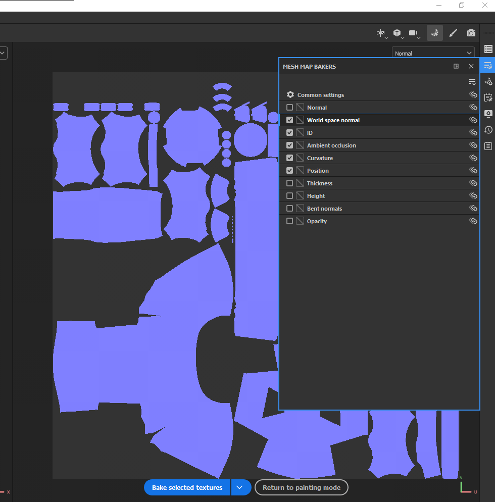

Todo el proyeco se encuentre en:
Teams, ruta, Documentos > General > Materiales de clase > Sesión 12 Substance > Getting-started-with-substance-3d-painter.zip
Descarga el documento que esta zipeado y descomprimenlo
Abre Substace 3d painter dentro del archivo descomprimido vas a tener una carpeta llamda geometry, ahi se encuentra el archivo spiderbot.fbx
En susbstance cerramos el Home Screen o cualquier pantalla de bienvenida, posteriormente en el menu File, vamos a new o con el shortcut CTRL+N creamos un nuevo proyecto.
Tenemos que seleccionar un nuevo Template el seleccionado es PBR Metalic Roughness Alpha-test (start_asset) Tienes que hacer captura de pantalla del new proyect,en document resolucion 2048, en el normal map format usamos Direct X, ahora en File vamos por nuestra geometría, el resultado debe ser algo como esto, inmediatemente guardamos el archivo con el que vamos a trabajar
Importante para naveger
ALT + LMB nos sirve para orbitar
ALT + MMB para panear
ALT + RMB para zoom
Para las distintas vista usamos F1, que nos coloca el modelo y textura, F2 solo modelo y F3 solo textura.
Del lado derecho en la parte superior vamos a tener un icono de una cámara, en la opción de enviroment vamos a darle click al boton que esta a lado del enviroment y camos a escoger Glased Patio
Importante
Puedes usar usar SHIFT +RMB para rotar el entorno.
Vamos a configurar las texturas que se van a cocer, buscamos en texture set setting Bake Mesh Maps
en esta opción descartamos normal y thickness y le damos bake selected textures esto puede tardar un par de minutos, calma
El resultado debe ser algo como esto:
En los layers eliminamos la primera capa y usamos la opción add group,en los materiales buscamos plastic grip se lo aplicamos, cambiamos el color en la parametros en Plastic color y tambien los otros valores y logramos esto
Le podemos aplicar un filtro de galvanizado
terminamos en video 01